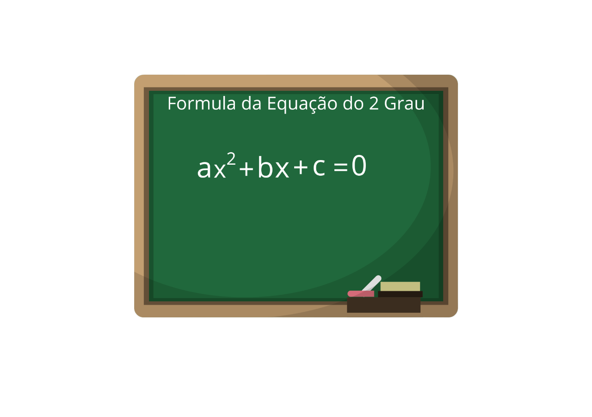

A equação do 2º grau é caracterizada por possuir uma incógnita de grau 2. Para
resolver esse tipo de equação, é importante conhecer a fórmula de Bhaskara.

A equação do 2º grau é caracterizada por um polinômio degrau 2, ouseja, um polinômio do tipo ax2+bx+c, em que a, b e
c são números reais.
Ao resolvermos uma equação de grau 2, estamos interessados em encontrar valores para a incógnita x que
torne o valor da expressão igual a 0, que são chamadas de raízes, isto é, ax2 + bx +c = 0.
Tipos de Equação do 2 Grau
A equação de 2º grau pode ser representada por ax²+bx+c=0, em que
oscoeficientes a, b e
c são números reais, com a ≠ 0.
A equação do 2º grau é classificada como completa
quando todos os coeficientes são
diferentes de 0, ou
seja, a ≠ 0, b ≠ 0 e c ≠ 0.
A equação do 2º grau é classificada como incompleta
quando o valor dos coeficientes b
ou c são iguais a
0, isto é, b = 0 ou c = 0.
-->Exemplos<--
a) 2x2 – 4 = 0 → a = 2; b = 0 e c= – 4
b) -x2 + 3x = 0 → a = – 1; b = 3 e c = 0
c) x2 = 0 → a = 1; b =0 e c =0
Atenção: o valor do coeficiente a nunca é igual a
0, caso isso ocorra, a equação deixargb(48, 47, 47) de ser do 2º grau.
Como resolver equações de 2º grau ?
A solução de uma equação do 2º grau ocorre, quando as raízes são encontradas, ou
seja, os valores atribuídos a x . Esses valores de x devem tornar a igualdade verdadeira, isto é, ao
substituir o valor de x na expressão, o resultado deve ser igual a 0.
-->Exemplos<--
Considerando a equação x2 – 1 = 0 temos que x’ = 1 e x’’ = – 1 são soluções
da
equação, pois substituindo esses valores na expressão, temos uma igualdade verdadeira. Veja:
x2 – 1 = 0
(1)2 – 1 = 0 e (–1)2 – 1 = 0
Para encontrar a solução de uma equação, é
preciso analisar se a equação é
completa e incompleta e selecionar qual método será utilizado.
Método de solução para equações do tipo ax²+ c = 0
O método para determinar a solução de equações incompletas que possuem b=0
consiste em isolar a incógnita x, assim:
-->Exemplo<--
Encontre as raízes da equação 3x2 – 27 = 0.
Método de solução para equações do tipo ax2 + bx = 0
O método para determinar as possíveis soluções de uma equação com c
=0, consiste em utilizar a fatoração por evidência.Veja:
ax2 + bx = 0
x·(ax + b) = 0
Ao observar a última igualdade, é notável que há uma multiplicação e
que para o resultado ser 0, é necessário que, pelo menos, um dos fatores seja igual a 0.
x·(ax + b) = 0
x = 0 ou ax + b = 0
Assim, a solução da equação é dada por:
-->Exemplo<--
Determine a solução da equação 5x2 – 45x = 0
Método de solução para equações completas
O método conhecido como método de Bhaskara ou fórmula de Bhaskara aponta que as raízes de uma
equação do 2º grau do tipo ax2 + bx + c = 0 é dada pela seguinte relação:
-->Exemplo<--
Determine a solução da equação x2 – x – 12 = 0.
Note que os coeficientes da equação são: a = 1; b= –
1 e c = – 12. Substituindo esses valores na fórmula de Bhaskara, temos:
O delta (Δ) recebe o nome de discriminante e note que
ele está dentro de uma raiz quadrada e,
conforme sabemos, levando em conta os números reais, não é possível
extrair raiz quadrada de um número negativo.
Conhecendo o valor do discriminante, podemos realizar
algumas afirmações a respeito da solução da equação do 2º grau:
→ discriminante positivo (Δ >
0): duas soluções para a equação;
→ discriminante igual a zero
(Δ = 0): as soluções da equação são repetidas;
→ discriminante negativo (Δ <
0): não admite solução real.
Sistemas de equações do segundo grau
Quando consideramos simultaneamente duas ou
mais equações, temos um sistema de equações. A solução de um
sistema de 2 variáveis é o conjunto de pares ordenados que
satisfaz simultaneamente todas as equações envolvidas.
-->Exemplo<--
Considere o sistema:
Com os valores: x’ = 2, x’’ = – 2 e
y’ = 2, y’’ = – 2 podemos montar pares ordenados que
satisfazem as equações do sistema simultaneamente. Veja:
(2, 2), (2, – 2), (– 2, 2), (– 2, – 2).
Lembre-se de que um par ordenado éescrito da forma (x, y).
Os métodos para encontrar a solução
de um sistema de equações são semelhantes ao de sistemaslineares.
-->Exemplo<--
Considere o sistema:
Da equação x – y = 0, vamos isolar a incógnita x, assim:
x – y = 0
x = y
Agora devemos substituir o valor isolado na outra equação, assim:
x2 – x –12 = 0
y2 – y –12 = 0
Utilizando método de Bhaskara, temos que:
Como x = y, teremos que x’ = y’ e x’’ = y’’. Ou seja:
x’ = 4
x’’ = -3
Assim, os pares ordenados são soluções do sistema (4, 4) e (– 3,– 3).